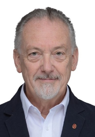

Alessandro Cimatti is the Director of the Center for Digital Industry at Fondazione Bruno Kessler in Trento, Italy. His research interests include formal verification, model checking, temporal logics, runtime verification, safety assessment, diagnosis and planning. Cimatti has authored more than 250 papers in the fields of formal methods and artificial intelligence. For his fundamental works on Bounded Model Checking and on Satisfiability Modulo Theories, he has received the TACAS 2014 Most Influential Paper award, the ETAPS 2017 Test of Time award and the CAV Award in 2018 and 2021. He has led numerous technology transfer projects, including research initiatives funded by the European Union, the European Space Agency and the European Railway Agency, as well as industrial collaborations with RFI, SAIPEM, Bosch and Boeing.
Alessandro Cimatti is the Director of the Center for Digital Industry at Fondazione Bruno Kessler in Trento, Italy. His research interests include formal verification, model checking, temporal logics, runtime verification, safety assessment, diagnosis and planning. Cimatti has authored more than 250 papers in the fields of formal methods and artificial intelligence. For his fundamental works on Bounded Model Checking and on Satisfiability Modulo Theories, he has received the TACAS 2014 Most Influential Paper award, the ETAPS 2017 Test of Time award and the CAV Award in 2018 and 2021. He has led numerous technology transfer projects, including research initiatives funded by the European Union, the European Space Agency and the European Railway Agency, as well as industrial collaborations with RFI, SAIPEM, Bosch and Boeing.
This lecture series provides a comprehensive introduction to advanced techniques for the analysis and verification of infinite-state systems, with a particular focus on methods based on Satisfiability Modulo Theories (SMT). The course is structured in four interconnected lectures that progressively cover the lifecycle of system design, analysis, and validation. The first lecture introduces SMT-based verification techniques for infinite-state systems, presenting foundational concepts, decision procedures, and practical approaches to model checking beyond finite domains. The second lecture addresses the transition from requirements analysis to contract-based design, highlighting how formal specifications and compositional reasoning enable scalable and rigorous system development. The third lecture focuses on model-based safety assessment, illustrating how formal models can support systematic identification and analysis of failure modes, thereby improving the reliability and safety of complex systems. The final lecture presents assumption-based runtime verification techniques, emphasizing how formally derived assumptions can be monitored at runtime to ensure system correctness in dynamic and uncertain environments. Overall, the course aims to provide both theoretical foundations and practical insights into the use of SMT-based methods across the full spectrum of system development, from specification and design to verification, safety analysis, and runtime assurance.

Professor Jim Woodcock is a leading researcher in formal methods, theorem proving, and the mathematical foundations of software engineering. He is a Distinguished Professor at Southwest University in Chongqing and at Aarhus University in Denmark and has held senior academic positions in the United Kingdom and China. He is an academician at the UK Royal Academy of Engineering. His research has made major contributions to Unifying Theories of Programming, the formal semantics of programming and modelling languages, and the application of mechanised proof to safety-critical systems. Professor Woodcock's current work focuses on institution-parametrised UTP theories in Isabelle/HOL, with applications to trustworthy software, intelligent connected vehicles, autonomous systems, and the assurance of AI-enabled cyber-physical systems. He has extensive experience in international research collaboration, doctoral training, and advanced teaching in formal specification, verification, and model-based engineering. At the Shanghai summer school, he will lecture on modelling and verifying intelligent connected vehicles, showing how institutions, UTP, Isabelle/HOL, CSP-style reasoning, and case studies from autonomous systems can be combined to build rigorous foundations for trustworthy intelligent mobility.Intelligent connected vehicles combine sensing, communication, computing, and control to interact safely and intelligently with drivers, other vehicles, roadside infrastructure, and cloud services. They are especially important to China as a major strategic industry tied to advanced manufacturing, digital infrastructure, and the future of new-energy mobility. These lectures introduce a rigorous semantic foundation for studying such systems: institutions provide a principled way to separate syntax, logic, and semantics, while parametrised UTP theories in Isabelle/HOL provide a mechanised semantic engine that can be instantiated for different modelling assumptions. Over four lectures, participants will move from foundational ideas and small motivating examples to the safe orchestration of LLM-based advice, to semantic links between physical vehicle models and higher-level verification views, and finally to cross-jurisdictional safety assurance using parametrised UTP theories integrated with Isabelle/SACM. The course is designed to show not only the theory, but also why it matters for the trustworthy design and assurance of next-generation automotive systems.
Yamine Aït Ameur is a Professor at the National Institute of Electrical Engineering, Electronics, Computer Science, Fluid Mechanics and Telecommunications (ENSEEIHT) of the National Polytechnic Institute of Toulouse (INPT), France, and a member of the ACADIE research team at the Institute of Research in Computer Science of Toulouse (IRIT, UMR CNRS 5505). Since September 2021, he has also served as the Head of the Digital and Mathematics Department at the French National Research Agency (ANR). His research interests include formal methods, refinement and proof-based verification, Event-B modeling, ontology-based domain modeling, hybrid systems verification, safety-critical systems engineering, and interactive systems design. Aït Ameur has authored more than 200 papers in the fields of formal methods and software engineering. For his fundamental contributions to the Event-B method, including the development of the EB4EB reflexive framework and the Hybridised Event-B approach for modeling and verifying cyber-physical systems, he has led numerous influential research initiatives. He has directed several major projects funded by the French National Research Agency (ANR), and has established industrial collaborations in the aerospace, railway, automotive and medical domains, working on the formal verification of avionics systems (ARINC 661), railway signaling systems, autonomous vehicle controllers, and medical protocols.